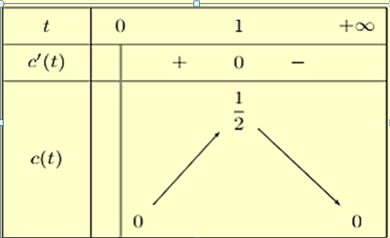
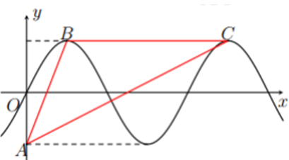
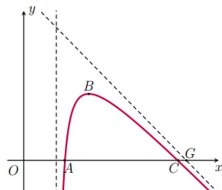

ĐỀ THI TOÁN - ĐỀ SỐ 12 HOT
Phần I: Trắc Nghiệm Nhiều Lựa Chọn
Tóm tắt kiến thức: Tính đơn điệu của hàm số
Hàm số \( y = f(x) \) đồng biến trên \( \mathbb{R} \) nếu đạo hàm \( y' \geq 0, \forall x \in \mathbb{R} \), và dấu "=" chỉ xảy ra tại hữu hạn điểm.
Câu 1:
Hàm số nào dưới đây đồng biến trên khoảng \( (-\infty; +\infty) \)?
Chọn đáp án:
Lời giải:
Xét hàm số \( y = 3x^3 + 3x - 2 \).
Đạo hàm: \( y' = 9x^2 + 3 > 0, \forall x \in \mathbb{R} \).
Vậy hàm số \( y = 3x^3 + 3x - 2 \) đồng biến trên \( \mathbb{R} \).
Đáp án: C.
Tóm tắt kiến thức: Cực trị của hàm số
Số điểm cực trị của hàm số \( y = f(x) \) được xác định bằng số nghiệm bội lẻ của phương trình \( f'(x) = 0 \).
Câu 2:
Cho hàm số \( y = f(x) \) có đạo hàm \( f'(x) = (x^2 - 4)(x + 2)(x - 3) \) và liên tục trên \( \mathbb{R} \). Số điểm cực trị của hàm số đã cho là:
Chọn đáp án:
Lời giải:
Ta có: \( f'(x) = 0 \Leftrightarrow (x^2 - 4)(x + 2)(x - 3) = 0 \).
\( \Leftrightarrow (x + 2)^2 (x - 2)(x - 3) = 0 \Leftrightarrow x = -2 \) (nghiệm kép), \( x = 2 \), \( x = 3 \).
Số nghiệm bội lẻ là: \( x = 2 \) và \( x = 3 \).
Vậy hàm số có 2 cực trị.
Đáp án: B.
Tóm tắt kiến thức: Giá trị lớn nhất của hàm số
Giá trị lớn nhất của hàm số trên đoạn được xác định từ bảng biến thiên, bằng cách so sánh giá trị tại các điểm đầu mút và điểm cực trị.
Câu 3:
Cho hàm số \( y = f(x) \) có bảng biến thiên như sau:

Giá trị lớn nhất của hàm số đã cho trên đoạn \( [-2; 4] \) bằng:
Chọn đáp án:
Lời giải:
Từ bảng biến thiên, giá trị lớn nhất của hàm số trên đoạn \( [-2; 4] \) là 10.
Đáp án: B.
Tóm tắt kiến thức: Nghiệm của phương trình dựa vào đồ thị
Số nghiệm của phương trình \( f(x) - k = 0 \) bằng số giao điểm của đồ thị hàm số \( y = f(x) \) với đường thẳng \( y = k \).
Câu 4:
Cho hàm số đa thức bậc bốn \( y = f(x) \) có đồ thị như hình vẽ:

Phương trình \( f(x) - 1 = 0 \) có bao nhiêu nghiệm thực phân biệt?
Chọn đáp án:
Lời giải:
Từ đồ thị, đường thẳng \( y = 1 \) cắt đồ thị hàm số tại 3 điểm phân biệt.
Do đó, phương trình \( f(x) - 1 = 0 \) có 3 nghiệm phân biệt.
Đáp án: A.
Tóm tắt kiến thức: Nhận dạng đồ thị hàm số
Đồ thị hàm số được xác định bằng cách kiểm tra các điểm mà đồ thị đi qua và dạng của hàm số.
Câu 5:
Đồ thị hàm số nào sau đây có hình dạng như hình vẽ?

Chọn đáp án:
Lời giải:
Đồ thị hàm số đi qua điểm \( (2; -4) \).
Thử với \( y = x^3 - 3x^2 \): tại \( x = 2 \), \( y = 2^3 - 3 \cdot 2^2 = 8 - 12 = -4 \).
Vậy hàm số \( y = x^3 - 3x^2 \) thỏa mãn.
Đáp án: C.
Tóm tắt kiến thức: Giải bất phương trình mũ
Để giải bất phương trình mũ dạng \( a^x < b \), đưa về dạng cùng cơ số và so sánh số mũ. Với cơ số \( 0 < a < 1 \), bất phương trình \( a^x < a^y \Rightarrow x > y \).
Câu 6:
Tập nghiệm của bất phương trình \( \left(\frac{1}{2}\right)^x < \frac{1}{8} \) là:
Chọn đáp án:
Lời giải:
Ta có: \( \left(\frac{1}{2}\right)^x < \frac{1}{8} \Leftrightarrow \left(\frac{1}{2}\right)^x < \left(\frac{1}{2}\right)^3 \).
Vì cơ số \( \frac{1}{2} < 1 \), nên \( \left(\frac{1}{2}\right)^x < \left(\frac{1}{2}\right)^3 \Leftrightarrow x > 3 \).
Tập nghiệm: \( (3; +\infty) \).
Đáp án: A.
Tóm tắt kiến thức: Tọa độ của vector
Cho vector \( \vec{x} = m\vec{i} + n\vec{j} + p\vec{k} \), tọa độ của vector là \( (m; n; p) \).
Câu 7:
Trong không gian \( Oxyz \), cho \( \vec{a} = 2\vec{i} - 3\vec{j} + \vec{k} \). Tọa độ của \( \vec{a} \) là:
Chọn đáp án:
Lời giải:
Ta có: \( \vec{a} = 2\vec{i} - 3\vec{j} + \vec{k} \).
Tọa độ của vector \( \vec{a} \) là \( (2; -3; 1) \).
Đáp án: B.
Tóm tắt kiến thức: Tọa độ trọng tâm tam giác
Tọa độ trọng tâm \( G \) của tam giác \( ABC \) được tính bởi: \( x_G = \frac{x_A + x_B + x_C}{3} \), \( y_G = \frac{y_A + y_B + y_C}{3} \), \( z_G = \frac{z_A + z_B + z_C}{3} \).
Câu 8:
Trong không gian \( Oxyz \), cho tam giác \( ABC \) với \( A(1; 3; 4) \), \( B(2; -1; 0) \), \( C(3; 1; 2) \). Tọa độ trọng tâm \( G \) của tam giác \( ABC \) là:
Chọn đáp án:
Lời giải:
Tọa độ trọng tâm \( G \):
\( x_G = \frac{1 + 2 + 3}{3} = 2 \), \( y_G = \frac{3 + (-1) + 1}{3} = 1 \), \( z_G = \frac{4 + 0 + 2}{3} = 2 \).
Vậy \( G(2; 1; 2) \).
Đáp án: C.
Tóm tắt kiến thức: Tích vô hướng
Cho hai vector \( \vec{m} = (x_M; y_M; z_M) \), \( \vec{n} = (x_N; y_N; z_N) \), tích vô hướng: \( \vec{m} \cdot \vec{n} = x_M x_N + y_M y_N + z_M z_N \).
Câu 9:
Trong không gian \( Oxyz \), cho \( \vec{a} = (1; -2; 2) \), \( \vec{b} = (-1; 2; 1) \). Giá trị của tích vô hướng \( \vec{a} \cdot \vec{b} \) bằng:
Chọn đáp án:
Lời giải:
Ta có: \( \vec{a} \cdot \vec{b} = 1 \cdot (-1) + (-2) \cdot 2 + 2 \cdot 1 = -1 - 4 + 2 = -3 \).
Đáp án: B.
Tóm tắt kiến thức: Góc giữa hai đường thẳng
Góc giữa hai đường thẳng được xác định dựa trên góc giữa các vector chỉ phương hoặc các mặt phẳng liên quan.
Câu 10:
Cho hình chóp \( S.ABCD \) có \( ABCD \) là hình vuông cạnh \( a \), tam giác \( SAD \) đều. Góc giữa hai đường thẳng \( BC \) và \( SA \) bằng:
Chọn đáp án:
Lời giải:
Vì \( AB \parallel BC \), nên \( (SA, BC) = (SA, AD) = \angle SAD \).
Tam giác \( SAD \) đều, nên \( \angle SAD = 60^\circ \).
Đáp án: A.
Tóm tắt kiến thức: Trung vị của mẫu số liệu ghép nhóm
Trung vị của mẫu số liệu ghép nhóm được tính bằng công thức: \( M_e = u_m + \frac{\frac{n}{2} - C}{n_m} (u_{m+1} - u_m) \), trong đó \( C \) là tổng tần số các nhóm trước nhóm chứa trung vị, \( n_m \) là tần số của nhóm chứa trung vị, \( n \) là kích thước mẫu.
Câu 11:
Trong tuần lễ bảo vệ môi trường, các học sinh khối 12 tiến hành thu nhặt vỏ chai nhựa để tái chế. Nhà trường thống kê kết quả thu nhặt vỏ chai của học sinh khối 11 như bảng sau:

Hãy tìm trung vị của mẫu số liệu ghép nhóm trên.
Chọn đáp án:
Lời giải:
Tổng tần số: \( 53 + 82 + 48 + 39 + 18 = 240 \).
Nhóm chứa trung vị là \( [15,5; 20,5] \), với \( C = 53 \), \( n_m = 82 \).
Trung vị: \( M_e = 15,5 + \frac{\frac{240}{2} - 53}{82} \cdot (20,5 - 15,5) \approx 19,59 \).
Đáp án: B.
Tóm tắt kiến thức: Tiệm cận xiên của hàm số
Đường tiệm cận xiên của hàm số \( y = f(x) \) có dạng \( y = ax + b \), với \( a = \lim_{x \to \pm\infty} \frac{f(x)}{x} \), \( b = \lim_{x \to \pm\infty} (f(x) - ax) \).
Câu 12:
Cho hàm số \( y = \frac{ax^2 + bx + c}{x} (ac \neq 0) \) có đồ thị như hình vẽ:

Đường tiệm cận xiên của đồ thị hàm số đã cho là đường thẳng:
Chọn đáp án:
Lời giải:
Đồ thị đi qua các điểm \( (2; -4) \), \( (-2; 4) \), nên:
\( \frac{4a + 2b + c}{2} = -4 \), \( \frac{4a - 2b + c}{-2} = 4 \Rightarrow 4a + 2b + c = -8 \), \( 4a - 2b + c = -8 \).
Điểm cực trị tại \( x = 2 \), nên \( y' = a - \frac{c}{x^2} = 0 \Rightarrow a - \frac{c}{4} = 0 \Rightarrow 4a - c = 0 \).
Giải hệ: \( a = -1 \), \( b = 0 \), \( c = -4 \).
Hàm số: \( y = \frac{-x^2 - 4}{x} \).
Tiệm cận xiên: \( m = \lim_{x \to +\infty} \frac{y}{x} = \lim_{x \to +\infty} \frac{-x^2 - 4}{x^2} = -1 \).
Vì tiệm cận đi qua \( O(0; 0) \), nên \( y = -x \).
Đáp án: B.
Phần II: Trắc Nghiệm Đúng/Sai
Tóm tắt kiến thức: Khảo sát hàm số
Khảo sát hàm số bằng cách tính đạo hàm, lập bảng biến thiên để xác định cực trị, giá trị lớn nhất/nhỏ nhất, và các tính chất khác.
Câu 13:
Nồng độ thuốc trong máu của bệnh nhân sau \( t \) giờ được cho bởi công thức \( c(t) = \frac{t}{t^2 + 1} \) (mg/l).

Xét các phát biểu sau:
Chọn đáp án cho từng phát biểu:
a)
b)
c)
d)
Lời giải:
a) Đúng: \( c(2) = \frac{2}{2^2 + 1} = 0,4 \) (mg/l).
Đạo hàm: \( c'(t) = \frac{1 - t^2}{(t^2 + 1)^2} \), \( c'(t) = 0 \Leftrightarrow t = \pm 1 \).
Từ bảng biến thiên:
b) Sai: Nồng độ tối đa là \( c(1) = 0,5 \), không vượt quá \( 0,5 \) (mg/l).
c) Đúng: Tại \( t = 1 \), \( c(t) \) đạt cực đại.
d) Đúng: Giá trị lớn nhất là \( c(1) = 0,5 \) (mg/l).
Đáp án: a) Đúng, b) Sai, c) Đúng, d) Đúng.
Tóm tắt kiến thức: Ứng dụng hàm số trong hình học
Sử dụng hàm số để tính khoảng cách, diện tích, và các đặc trưng hình học. Tiếp tuyến song song với đường thẳng cho biết điểm tiếp xúc.
Câu 14:
Một hồ nước nhân tạo được xây dựng trong một công viên giải trí, được giới hạn bởi các trục tọa độ và đồ thị hàm số \( y = f(x) = -0,1x^3 + 0,9x^2 - 1,5x + 5,6 \). Đơn vị đo độ dài trên mỗi trục tọa độ là \( 100 \) m.

Xét các phát biểu sau:
Chọn đáp án cho từng phát biểu:
a)
b)
c)
d)
Lời giải:
a) Sai: Giao điểm với trục \( Ox \): \( -0,1x^3 + 0,9x^2 - 1,5x + 5,6 = 0 \Rightarrow x = 8 \).
Đường dạo dài \( 8 \cdot 100 = 800 \) m.
b) Đúng: Đạo hàm: \( y' = -0,3x^2 + 1,8x - 1,5 = 0 \Rightarrow x = 1, x = 5 \).
Tại \( x = 5 \), \( f(x) \) đạt cực đại, tương ứng \( 500 \) m.
c) Đúng: Khoảng cách nhỏ nhất là \( f(0) = 5,6 \cdot 100 - 70 = 490 \) m (do trục \( Oy \) dịch 70 m).
d) Đúng: Tiếp tuyến tại \( x_0 = 6 \): \( f'(6) = -1,5 \), \( f(6) = 7,4 \).
Tọa độ \( M(6; 7,4) \), \( a + 5b = 6 + 5 \cdot 7,4 = 43 \).
Đáp án: a) Sai, b) Đúng, c) Đúng, d) Đúng.
Tóm tắt kiến thức: Hình học không gian
Sử dụng tọa độ để tính vector, hình chiếu, và các tính chất hình học như hình bình hành, tam giác vuông.
Câu 15:
Trong không gian với hệ tọa độ \( Oxyz \), cho tam giác \( ABC \) với \( A(1; 0; -2) \), \( B(-2; 3; 4) \), \( C(4; -6; 1) \). Xét các phát biểu sau:
Chọn đáp án cho từng phát biểu:
a)
b)
c)
d)
Lời giải:
a) Sai: \( \overrightarrow{AB} = (-2 - 1; 3 - 0; 4 - (-2)) = (-3; 3; 6) \).
b) Sai: Hình chiếu của \( B(-2; 3; 4) \) lên trục \( Ox \): \( B'(-2; 0; 0) \).
c) Sai: \( M(m; 0; 0) \), \( \overrightarrow{MB} = (-2 - m; 3; 4) \), \( \overrightarrow{MC} = (4 - m; -6; 1) \).
\( \overrightarrow{MB} \cdot \overrightarrow{MC} = (m + 2)(m - 4) - 18 + 4 = 0 \Rightarrow m = 1 \pm \sqrt{23} \). Có 2 điểm \( M \), không phải 1.
d) Đúng: \( \overrightarrow{AB} = \overrightarrow{CD} \Rightarrow (a - 4; b + 6; c - 1) = (-3; 3; 6) \Rightarrow D(1; -3; 7) \).
Đáp án: a) Sai, b) Sai, c) Sai, d) Đúng.
Tóm tắt kiến thức: Thể tích và khoảng cách trong không gian
Thể tích lăng trụ: \( V = S_{\text{đáy}} \cdot h \). Khoảng cách từ điểm đến mặt phẳng được tính dựa trên đường cao.
Câu 16:
Cho lăng trụ đứng \( ABC.A'B'C' \) có \( AC = a \), \( BC = 2a \), \( \angle ACB = 120^\circ \), có thể tích \( V \). Gọi \( M \) là trung điểm của \( BB' \).

Xét các phát biểu sau:
Chọn đáp án cho từng phát biểu:
a)
b)
c)
d)
Lời giải:
a) Sai: \( AC \perp CC' \), \( BC \perp CC' \Rightarrow (ABC) \perp CC' \Rightarrow [A, BB', C] = \angle ACB = 120^\circ \).
b) Đúng: Diện tích đáy: \( S_{ABC} = \frac{1}{2} \cdot a \cdot 2a \cdot \sin 120^\circ = \frac{a^2 \sqrt{3}}{2} \).
Thể tích: \( V = S_{ABC} \cdot 2a = \frac{a^2 \sqrt{3}}{2} \cdot 2a = a^3 \sqrt{3} \).
c) Đúng: \( V_{M.ABC} = \frac{1}{3} \cdot \frac{1}{2} BB' \cdot S_{ABC} = \frac{1}{6} V \).
d) Đúng: \( AB = \sqrt{a^2 + 4a^2 - 2 \cdot a \cdot 2a \cdot \cos 120^\circ} = a \sqrt{7} \).
\( S_{ABC} = \frac{1}{2} \cdot CH \cdot AB \Rightarrow CH = \frac{a^2 \sqrt{3}}{a \sqrt{7}} = \frac{a \sqrt{21}}{7} \).
Vì \( CH \perp (ABB'A') \), nên \( d(C', (ABB'A')) = CH \).
Đáp án: a) Sai, b) Đúng, c) Đúng, d) Đúng.
Phần III: Trắc Nghiệm Trả Lời Ngắn
Tóm tắt kiến thức: Diện tích tam giác
Diện tích tam giác được tính bằng \( S = \frac{1}{2} \cdot a \cdot h \), với \( a \) là cạnh đáy, \( h \) là chiều cao.
Câu 17:
Cho đồ thị hàm số \( f(x) = 2 \sin x \) như hình vẽ.

Tính diện tích tam giác \( ABC \).
Nhập đáp án:
Lời giải:
Tọa độ: \( A(0; -2) \), \( B\left(\frac{\pi}{2}; 2\right) \), \( C\left(\frac{5\pi}{2}; 2\right) \).
Khoảng cách từ \( A \) đến \( BC \): \( d(A, BC) = 4 \).
\( BC = 2\pi \).
Diện tích: \( S_{ABC} = \frac{1}{2} \cdot 4 \cdot 2\pi = 4\pi \approx 12,6 \).
Đáp án: 12,6.
Tóm tắt kiến thức: Thể tích hồ bơi
Thể tích được tính bằng \( V = S_{\text{đáy}} \cdot h \). Diện tích đáy tính dựa trên hình thang hoặc tam giác.
Câu 18:
Cho hồ bơi có dạng như hình vẽ, cần bơm nước để đạt 75% thể tích hồ.


Hỏi cần bơm trong thời gian bao lâu? (đơn vị tính bằng phút, biết lưu lượng bơm là 0,25 m³/phút).
Nhập đáp án:
Lời giải:
\( BC = \frac{AB \cdot DE}{AD} = \frac{1 \cdot 12}{3} = 4 \) m.
\( S_{ABC} = \frac{1}{2} \cdot 1 \cdot 4 = 2 \) m².
Thể tích nước hiện có: \( V_1 = 2 \cdot 6 = 12 \) m³.
\( S_{ADEF} = \frac{(3 + 1) \cdot 12}{2} = 24 \) m².
Thể tích hồ: \( V = 24 \cdot 6 = 144 \) m³.
Thể tích cần bơm: \( 0,75 \cdot 144 - 12 = 96 \) m³.
Thời gian: \( 96 \div 0,25 = 384 \) phút.
Đáp án: 384.
Tóm tắt kiến thức: Tối ưu hóa hàm số
Để tìm điểm mà đạo hàm đạt giá trị lớn nhất, tính đạo hàm cấp hai, tìm điểm uốn bằng cách giải \( f''(t) = 0 \).
Câu 19:
Giả sử tỷ lệ sinh của tỉnh \( A \) tuân theo quy luật logistic, được mô hình hóa bằng hàm số \( f(t) = \frac{200}{1 + 4e^{-t}} \), \( t \geq 0 \), \( t \in \mathbb{N} \), trong đó thời gian \( t \) tính bằng tháng. Hỏi sau bao nhiêu tháng tốc độ tăng trưởng dân số của tỉnh \( A \) là lớn nhất?
Nhập đáp án:
Lời giải:
Đạo hàm: \( f'(t) = \frac{800e^{-t}}{(1 + 4e^{-t})^2} \).
Đạo hàm cấp hai: \( f''(t) = \frac{800e^{-t}}{(1 + 4e^{-t})^3} (4e^{-t} - 1) \).
\( f''(t) = 0 \Leftrightarrow e^{-t} = \frac{1}{4} \Leftrightarrow t = \ln 4 \approx 1,386 \).
Vì \( t \in \mathbb{N} \), thử \( t = 2 \): \( f'(2) \) gần giá trị lớn nhất.
Đáp án: 2.
Tóm tắt kiến thức: Hàm số phân thức
Hàm số phân thức bậc hai trên bậc nhất có tiệm cận đứng và tiệm cận xiên. Tọa độ các điểm và điều kiện cực trị giúp xác định hàm số.
Câu 20:
Một máy bay trình diễn có đường bay gần với hệ trục \( Oxy \), mô phỏng bởi một phần của đồ thị hàm số phân thức bậc hai trên bậc nhất \( y = f(x) \), có tiệm cận đứng \( x = 2 \). Điểm \( G \) là giao điểm của tiệm cận xiên và trục \( Ox \). Máy bay xuất phát tại \( A \) cách gốc \( O \) 2,5 đơn vị, ở vị trí cao nhất cách điểm xuất phát 1,5 đơn vị theo phương song song trục \( Ox \) và cách mặt đất 4,5 đơn vị.

Vị trí máy bay tiếp đất cách điểm giới hạn một khoảng bằng bao nhiêu?
Nhập đáp án:
Lời giải:
Hàm số: \( f(x) = \frac{ax^2 + bx + c}{x - 2} \).
Điểm \( A(2,5; 0) \), \( B(4; 4,5) \): \( 6,25a + 2,5b + c = 0 \), \( 16a + 4b + c = 9 \).
Điểm cực trị tại \( x = 4 \): \( f'(x) = \frac{ax^2 - 4ax - 2b - c}{(x - 2)^2} = 0 \Rightarrow 2b + c = 0 \).
Giải: \( a = -1 \), \( b = 12,5 \), \( c = -25 \).
Hàm số: \( f(x) = \frac{-x^2 + 12,5x - 25}{x - 2} = -x + 10,5 - \frac{4}{x - 2} \).
Tiệm cận xiên: \( y = -x + 10,5 \).
Giao điểm \( G(10,5; 0) \), tiếp đất tại \( C(10; 0) \).
\( CG = 10,5 - 10 = 0,5 \).
Đáp án: 0,5.
Tóm tắt kiến thức: Hợp lực
Độ lớn hợp lực của các lực được tính bằng: \( |\vec{F}| = \sqrt{\sum F_i^2 + 2 \sum \vec{F_i} \cdot \vec{F_j}} \), với tích vô hướng \( \vec{F_i} \cdot \vec{F_j} = F_i F_j \cos \theta \).
Câu 21:
Có ba lực cùng tác động vào một cái bàn như hình vẽ. Trong đó hai lực \( \vec{F_1} \), \( \vec{F_2} \) nằm trên mặt phẳng chứa mặt bàn, tạo với nhau góc \( 110^\circ \), có độ lớn lần lượt là \( 9 \) N, \( 4 \) N; lực \( \vec{F_3} \) vuông góc với mặt bàn, độ lớn \( 7 \) N.

Độ lớn hợp lực của ba lực trên là \( a \) (N). Tìm giá trị của \( a \) (kết quả quy tròn về số nguyên).
Nhập đáp án:
Lời giải:
Độ lớn hợp lực: \( |\vec{F_1} + \vec{F_2} + \vec{F_3}| = \sqrt{9^2 + 4^2 + 7^2 + 2 \cdot 9 \cdot 4 \cdot \cos 110^\circ + 2 \cdot 4 \cdot 7 \cdot \cos 90^\circ + 2 \cdot 9 \cdot 7 \cdot \cos 90^\circ} \).
\( = \sqrt{81 + 16 + 49 + 72 \cdot \cos 110^\circ} \approx 11 \).
Đáp án: 11.